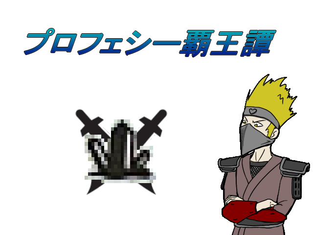

| |
 |
|
| 作者：めざ | |
| ツクール：VX | |
| 作者コメント： 遅刻提出します。 [解説]─━─━─━─━━─━─━─━─━─━─━─━─━─━─━ 【テーブルトークRPG】 プレイヤーがゲームキーパー（進行役）と対話しながら ゲームの舞台を探索するゲームの事です。 【リプレイ】 上記テーブルトークRPGのログ。 見るゲー。 【ゲームキーパー】 GM ：Meza 【探索者】 Hazu ：Hazu 茶々 ：Tea イングヴェイ ：Satsu ヨル ：Einh Kity ：Kity 【補足】 耐久値 ： ２以下になると意識不明に、０になると死亡します。 MP ： ０になると意識不明になります。 SAN ： 一度に５減ると一時的狂気、1/5減ると不定の狂気、 ０になると永久的に狂気に陥ります。 狂気になると、まともに行動ができなくなります。 この３つのパラメータが生命線です。 ━─━─━─━─━─━━─━─━─━─━─━─━─━─━─━─━ |
|
| 管理人コメント： CoCは数回セッションに参加したことがありますが、他と比べてだいぶ特殊なTRPGで面白いです |
|
| ダウンロード(48.0MB) / 感想掲示板 | |
| 前の作品 / 次の作品 / TOPへ戻る | |